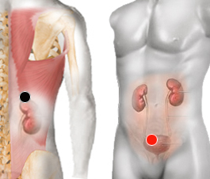

Toxinas en el riñón
Pares
cápsula renal - vejiga
riñón - hígado

Generalidades:
Causan deterioro de la función renal; los síntomas son inespecificos y pueden incluir una sensación de malestar general y reducción de apetito.
Causas:
Este tipo de intoxicación se presenta con más frecuencia por el mal uso o abuso de medicamentos, anabólicos, esteroides, entre otros.